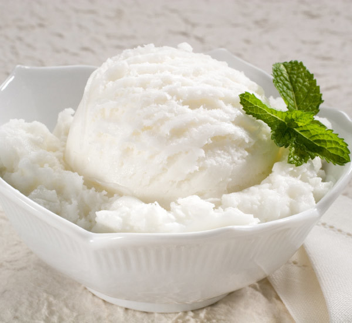

Home
HUMCOM1 Exercise 2
Exercise5a
Exercise5b
Exercise5c
Exercise6a
Exercise6b
Exercise7a
Exercise8
Calpis Ice Cream

- - Bring the deliciously unique yoghurt-y flavour of Calpis to your dessert with this calpis ice cream recipe. The slight tartness of Calpis beautifully offsets the richness of the cream in this recipe, making for an ice cream that is as refreshing as it is decadent. Enjoy as an end-of-day sweet treat, particularly during the warmer months.
Ingredients
- 100ml calpis
- 200ml cream
- 30g ramune flavour sweets
The preparation and cooking instructions
- Whisk the cream for 8 minutes in a bowl. Dilute the calpis with in a ratio of 1 part calpis to 2 parts water, then add to the cream and whisk again.
- Crush up the ramune flavour sweets, then stir into the mixture.
- Spoon into a freezer bag and freeze for at least 3 hours. Enjoy.